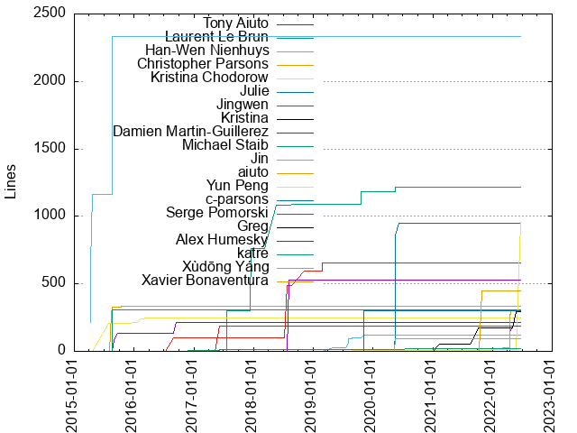
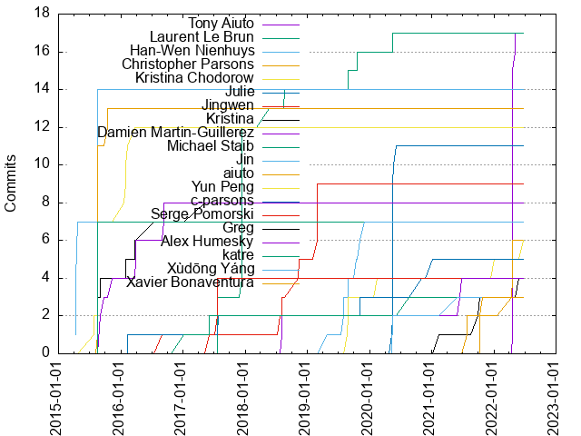

Authors
| Author | Commits (%) | + lines | - lines | First commit | Last commit | Age | Active days | # by commits |
|---|
| Tony Aiuto | 17 (8.10%) | 188 | 140 | 2022-04-19 | 2022-05-05 | 15 days, 21:11:19 | 3 | 1 |
| Laurent Le Brun | 17 (8.10%) | 1219 | 292 | 2017-07-21 | 2020-05-14 | 1028 days, 5:37:14 | 9 | 2 |
| Han-Wen Nienhuys | 14 (6.67%) | 2332 | 6 | 2015-04-02 | 2015-04-23 | 21 days, 2:48:42 | 4 | 3 |
| Christopher Parsons | 13 (6.19%) | 337 | 44 | 2015-08-17 | 2015-10-13 | 57 days, 5:59:39 | 3 | 4 |
| Kristina Chodorow | 12 (5.71%) | 247 | 86 | 2015-07-28 | 2016-03-23 | 238 days, 23:24:18 | 6 | 5 |
| Julie | 11 (5.24%) | 951 | 7 | 2020-05-11 | 2020-06-08 | 27 days, 20:29:47 | 5 | 6 |
| Jingwen | 9 (4.29%) | 652 | 29 | 2016-08-29 | 2019-02-27 | 912 days, 7:44:17 | 7 | 7 |
| Kristina | 8 (3.81%) | 1 | 4 | 2015-08-18 | 2017-05-10 | 631 days, 7:35:10 | 7 | 8 |
| Damien Martin-Guillerez | 8 (3.81%) | 217 | 957 | 2015-09-02 | 2016-09-12 | 375 days, 23:47:17 | 5 | 9 |
| Michael Staib | 7 (3.33%) | 305 | 41 | 2015-08-19 | 2015-08-20 | 22:37:07 | 2 | 10 |
| Jin | 7 (3.33%) | 122 | 66 | 2019-04-29 | 2019-12-02 | 216 days, 21:02:28 | 6 | 11 |
| aiuto | 6 (2.86%) | 302 | 262 | 2021-10-07 | 2022-04-20 | 195 days, 9:17:15 | 5 | 12 |
| Yun Peng | 6 (2.86%) | 957 | 5 | 2019-08-21 | 2022-06-22 | 1035 days, 19:29:14 | 6 | 13 |
| c-parsons | 5 (2.38%) | 304 | 11 | 2016-02-10 | 2021-01-05 | 1791 days, 6:14:04 | 5 | 14 |
| Serge Pomorski | 4 (1.90%) | 190 | 22 | 2017-06-06 | 2017-07-20 | 43 days, 22:35:31 | 2 | 15 |
| Greg | 4 (1.90%) | 292 | 130 | 2021-02-10 | 2022-05-27 | 470 days, 22:14:59 | 4 | 16 |
| Alex Humesky | 4 (1.90%) | 531 | 13 | 2018-08-03 | 2021-06-24 | 1055 days, 11:15:39 | 3 | 17 |
| katre | 3 (1.43%) | 19 | 45 | 2017-01-04 | 2020-08-21 | 1324 days, 21:16:09 | 3 | 18 |
| Xùdōng Yáng | 3 (1.43%) | 94 | 11 | 2020-05-12 | 2021-05-27 | 380 days, 5:42:04 | 3 | 19 |
| Xavier Bonaventura | 3 (1.43%) | 450 | 6 | 2021-07-26 | 2021-10-27 | 92 days, 18:08:36 | 3 | 20 |
These didn't make it to the top: Keith Smiley, Vladimir Moskva, László Csomor, Jon Brandvein, Dmitry Lomov, Dave Lee, Ara Nguyen, Abhilash Gnan, samuela, pengwa, mark, lberki, dmaclach, Vladimir Vukicevic, Ulf Adams, Thomas Van Lenten, Thi, TK Kiatkungwanglai, Seçkin Savaşçı, Scott Wegner, Pras Velagapudi, Petr Shevtsov, Passw, Nico, Natalie Weizenbaum, Mike Morearty, Michael Vorburger ⛑️, Matthias Maennich, Marcel Hlopko, Manfred Touron, Lukacs T. Berki, Kirill Spitsyn, Ivo List, Iain Merrick, Florian Weikert, Dmitry Savintsev, Daniel, Andrew Stepanov, Aleks Djuricin, Ahmad Rasyid Salim
Only top 20 authors shown
Only top 20 authors shown
| Month | Author | Commits (%) | Next top 5 | Number of authors |
|---|
| 2022-06 | Yun Peng | 1 (100.00% of 1) | | 1 |
| 2022-05 | Tony Aiuto | 2 (66.67% of 3) | Greg | 2 |
| 2022-04 | Tony Aiuto | 15 (75.00% of 20) | aiuto, Scott Wegner | 3 |
| 2022-01 | Yun Peng | 1 (33.33% of 3) | Dmitry Savintsev, Ahmad Rasyid Salim | 3 |
| 2021-12 | Ara Nguyen | 2 (100.00% of 2) | | 1 |
| 2021-10 | aiuto | 2 (50.00% of 4) | Xavier Bonaventura, Greg | 3 |
| 2021-09 | Greg | 1 (100.00% of 1) | | 1 |
| 2021-08 | Matthias Maennich | 1 (50.00% of 2) | Keith Smiley | 2 |
| 2021-07 | Xavier Bonaventura | 2 (50.00% of 4) | Kirill Spitsyn, Abhilash Gnan | 3 |
| 2021-06 | Alex Humesky | 2 (100.00% of 2) | | 1 |
| 2021-05 | Xùdōng Yáng | 1 (100.00% of 1) | | 1 |
| 2021-02 | Greg | 1 (100.00% of 1) | | 1 |
| 2021-01 | c-parsons | 1 (100.00% of 1) | | 1 |
| 2020-11 | c-parsons | 1 (33.33% of 3) | Keith Smiley, Ivo List | 3 |
| 2020-08 | katre | 1 (100.00% of 1) | | 1 |
| 2020-06 | Julie | 1 (100.00% of 1) | | 1 |
| 2020-05 | Julie | 10 (76.92% of 13) | Xùdōng Yáng, Laurent Le Brun | 3 |
| 2020-04 | Pras Velagapudi | 1 (50.00% of 2) | Abhilash Gnan | 2 |
| 2020-02 | Yun Peng | 1 (100.00% of 1) | | 1 |
| 2020-01 | László Csomor | 1 (100.00% of 1) | | 1 |
| 2019-12 | Jin | 1 (100.00% of 1) | | 1 |
| 2019-11 | c-parsons | 1 (50.00% of 2) | Jin | 2 |
| 2019-10 | Seçkin Savaşçı | 1 (33.33% of 3) | Laurent Le Brun, Jin | 3 |
| 2019-09 | Nico | 1 (100.00% of 1) | | 1 |
| 2019-08 | Yun Peng | 3 (37.50% of 8) | Jin, Laurent Le Brun, Keith Smiley | 4 |
| 2019-07 | László Csomor | 1 (100.00% of 1) | | 1 |
| 2019-05 | Jon Brandvein | 1 (100.00% of 1) | | 1 |
| 2019-04 | Jin | 1 (100.00% of 1) | | 1 |
| 2019-02 | Jingwen | 4 (57.14% of 7) | Thi, TK Kiatkungwanglai, Florian Weikert | 4 |
| 2019-01 | mark | 1 (50.00% of 2) | Dmitry Lomov | 2 |
| 2018-12 | Thomas Van Lenten | 1 (50.00% of 2) | Aleks Djuricin | 2 |
| 2018-11 | Jingwen | 2 (100.00% of 2) | | 1 |
| 2018-08 | Dave Lee | 2 (33.33% of 6) | Alex Humesky, Laurent Le Brun, Jingwen | 4 |
| 2018-07 | Natalie Weizenbaum | 1 (50.00% of 2) | Jingwen | 2 |
| 2018-06 | pengwa | 1 (100.00% of 1) | | 1 |
| 2018-05 | Laurent Le Brun | 1 (100.00% of 1) | | 1 |
| 2018-03 | Michael Vorburger ⛑️ | 1 (50.00% of 2) | Jon Brandvein | 2 |
| 2018-01 | Passw | 1 (100.00% of 1) | | 1 |
| 2017-12 | Laurent Le Brun | 9 (100.00% of 9) | | 1 |
| 2017-11 | samuela | 1 (16.67% of 6) | lberki, dmaclach, Mike Morearty, Dmitry Lomov, Daniel | 6 |
| 2017-10 | Marcel Hlopko | 1 (50.00% of 2) | Lukacs T. Berki | 2 |
| 2017-09 | Vladimir Vukicevic | 1 (100.00% of 1) | | 1 |
| 2017-08 | Vladimir Moskva | 2 (66.67% of 3) | Andrew Stepanov | 2 |
| 2017-07 | Serge Pomorski | 3 (37.50% of 8) | Laurent Le Brun, c-parsons, Petr Shevtsov | 4 |
| 2017-06 | katre | 1 (50.00% of 2) | Serge Pomorski | 2 |
| 2017-05 | Kristina | 1 (100.00% of 1) | | 1 |
| 2017-01 | katre | 1 (100.00% of 1) | | 1 |
| 2016-10 | Iain Merrick | 1 (100.00% of 1) | | 1 |
| 2016-09 | Damien Martin-Guillerez | 2 (100.00% of 2) | | 1 |
| 2016-08 | Jingwen | 1 (100.00% of 1) | | 1 |
| 2016-07 | Kristina | 1 (100.00% of 1) | | 1 |
| 2016-03 | Damien Martin-Guillerez | 2 (50.00% of 4) | Kristina Chodorow, Kristina | 3 |
| 2016-02 | c-parsons | 1 (50.00% of 2) | Kristina Chodorow | 2 |
| 2016-01 | Kristina Chodorow | 3 (60.00% of 5) | Ulf Adams, Kristina | 3 |
| 2015-11 | Damien Martin-Guillerez | 1 (100.00% of 1) | | 1 |
| 2015-10 | Christopher Parsons | 2 (100.00% of 2) | | 1 |
| 2015-09 | Damien Martin-Guillerez | 3 (75.00% of 4) | Kristina | 2 |
| 2015-08 | Christopher Parsons | 11 (40.74% of 27) | Michael Staib, Kristina Chodorow, Kristina, Manfred Touron | 5 |
| 2015-07 | Kristina Chodorow | 2 (100.00% of 2) | | 1 |
| 2015-04 | Han-Wen Nienhuys | 14 (100.00% of 14) | | 1 |
| Year | Author | Commits (%) | Next top 5 | Number of authors |
|---|
| 2022 | Tony Aiuto | 17 (62.96% of 27) | aiuto, Yun Peng, Scott Wegner, Greg, Dmitry Savintsev | 7 |
| 2021 | Xavier Bonaventura | 3 (16.67% of 18) | Greg, aiuto, Ara Nguyen, Alex Humesky, c-parsons | 11 |
| 2020 | Julie | 11 (50.00% of 22) | Xùdōng Yáng, katre, c-parsons, Yun Peng, Pras Velagapudi | 11 |
| 2019 | Jin | 7 (25.93% of 27) | Jingwen, Yun Peng, Laurent Le Brun, mark, c-parsons | 15 |
| 2018 | Jingwen | 4 (23.53% of 17) | Laurent Le Brun, Dave Lee, Alex Humesky, pengwa, Thomas Van Lenten | 11 |
| 2017 | Laurent Le Brun | 12 (36.36% of 33) | Serge Pomorski, katre, Vladimir Moskva, samuela, lberki | 17 |
| 2016 | Kristina Chodorow | 5 (31.25% of 16) | Damien Martin-Guillerez, Kristina, c-parsons, Ulf Adams, Jingwen | 7 |
| 2015 | Han-Wen Nienhuys | 14 (28.00% of 50) | Christopher Parsons, Michael Staib, Kristina Chodorow, Kristina, Damien Martin-Guillerez | 7 |
| Domains | Total (%) |
|---|
| google.com | 101 (48.10%) |
|---|
| users.noreply.github.com | 50 (23.81%) |
|---|
| gmail.com | 46 (21.90%) |
|---|
| henchmonkey.org | 2 (0.95%) |
|---|
| vorburger.ch | 1 (0.48%) |
|---|
| thi.im | 1 (0.48%) |
|---|
| savasci.org | 1 (0.48%) |
|---|
| pobox.com | 1 (0.48%) |
|---|
| microsoft.com | 1 (0.48%) |
|---|
| maennich.net | 1 (0.48%) |
|---|